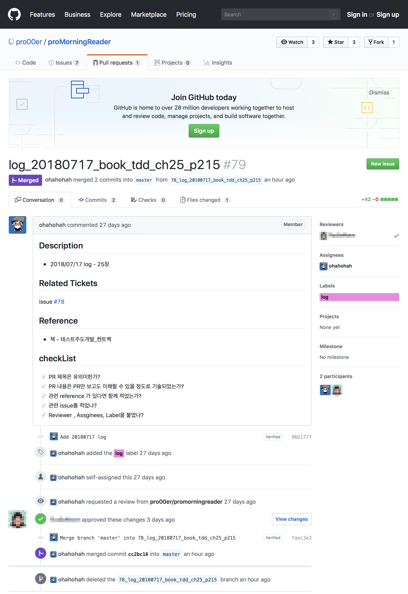

Keyword
gitignore
Reference
상황 / 궁금
정리
gitignore
- repository에서 불필요한 파일,폴더 무시 : .gitignore (local) or .gitignore_global(global) / Github Help- Ignoring files
- gitignore 에서 제외할 환경검색.
- gitignore.io - command line 사용하면 편리함.
- 최상위디렉토리에서 .gitignore 생성 (echo 또는
touch(windows경우) 로 파일 생성) - GitLab API 사용 https://docs.gitlab.com/ee/api/
GitLab API
회사 gitlab website 상에서 issue label 생성만 되고 편집, 삭제가 되지 않음. API 를 사용해 편집, 삭제 하려고 했으나 회사 server에서는 GET 만 허용하므로 조회만 가능
curl 사용시
-v옵션 추가하여 상세 상태 알 수 있음.회사 gitlab API 실행 결과
(...) < Status: 405 Method Not Allowed < Allow: OPTIONS, GET, HEAD (...)
현재 Gitlab에 따라 사용할 수 있는 API version이 다름 / 현재 회사 Gitlab API v3
- API 사용시, 사용자의 private token 과 project id 사용함.
- Profile - Account settings - Private token 확인가능: personal-access-tokens
- project id 조회 :
curl -XGET --header "PRIVATE-TOKEN: XXXX" "https://gitlab.com/api/v3/projects/owned"- gitlab url에 따라 위 url은 수정해주어야함
- where do I find the project id for the gitlab api?
closing github issue
- 처음 github 협업을 할때 놓치기 쉬운 것 시리즈
- PR merge할때, 연관된 issue를 close 안하고 merge한 branch를 지우지 않았더니 나중에 해당 작업이 완료되었는데도 여러 branch와 관련 issue들이 close 되지 않았음. PR할때 issue, PR, Branch이 세 가지를 자연스럽게 연결하기 위해 주의해야하는 부분을 정리해본다
] 그림 1. Github 실제 PR화면
- 개인 프로젝트를 진행할때의 기본 프로세스를 소개한다.
- issue 등록
- 작업할 브랜치를 생성 - issue id 를 prefix로 붙임.
- 작업이 완료되면 PR을 날린다.
- 해당 작업시에 특히 신경쓰는 부분은 아래와 같다
- PR title
- 나중에 검색이 쉽도록 협의를 통해 특정 양식을 정한다
- 예. issue넘버_간략주제
- tag
- 해당 PR의 성격에 따라 tag 를 지정한다
- 나중에 검색 등 관리에 유용하게 쓰이니 꼭 쓰는 습관을 들이도록 하자
- assignee
- 해당 PR의 작업자를 지정
- 큰 오픈소스의 경우 이 부분을 지정하지 않는 경우가 있음
- Reviewer
- 팀 작업의 경우, 리뷰를 완료 후 반영해야하는 상황이 생긴다. reviewer를 지정하면, github에서 해당 리뷰어에게 메일로 리뷰요청에 대한 noti가 간다
- 설정에서 메일 안내를 꺼두었을 경우도 있어서 slack 등 다른 협업채널로도 noti가 가도록 설정해두기도 함
- 팀 작업의 경우, 리뷰를 완료 후 반영해야하는 상황이 생긴다. reviewer를 지정하면, github에서 해당 리뷰어에게 메일로 리뷰요청에 대한 noti가 간다
- review하기 / review 내용 확인
- 리뷰를 받고 피드백에 맞추어 작업내용을 수정한다
- review하는 방법에 대해서는 다른 post에 기술할 예정
- Merge / reject
- Delete Brach
- issue에 comment 남기기 / closing issue
- PR 을 등록할때는 description 또는 PR title에 관련 issue 적기
- github issue에 등록해두었을 경우,
#issue번호를 등록하면 자동으로 해당 issue에 관련된 PR이 참조된다. 위 그림의 issue
Merge 후 delete branch
- github에서는
delete branch버튼이 생긴다. 더 이상 작업하지 않을 branch는 이 버튼을 사용해 삭제하자. - PR은 기본적으로 branch단위로 작업된다. 해당 PR의 작업이 merge(또는 reject되서 완료)되었을 경우, branch를 지우고 다른 작업은 새롭게 branch를 생성해서 작업한다. 하지만 프로젝트마다 적용방법이 다르므로 프로젝트에서 정한 규칙을 따르자.
- 처음 PR을 할때 많이 하는 실수가 해당 branch가 merge되지 않았는데 이 branch에 다른 작업을 진행하는 것이다. 새롭게 작업한 commit이 해당 PR에 반영되어버린다.
- PR이 반영된 후에는 PR을 날렸던 branch에 작업하더라도 새로운 작업으로 인식해 새로운 PR로 반영된다.
- 다시 한번 강조하지만 PR은 기본적으로 bracn 단위 작업이다. 절대 PR을 날리는게 작업의 완료가 아니다. 해당 PR이 merge 혹은 reject 되고, issue 혹은 관리하는 ticket에 관련 내용을 반영하는 것(close issue 또는 해당 PR내용을 comment)까지가 해당 작업의 완료이다.
- 이것 역시 프로젝트마다 운영정책이 다르므로 정확한 구현은 프로젝트의 운영정책을 참고해야한다.
revert를 사용해서 해당 branch는 되살릴 수 있으므로 잘못 눌렀다고 너무 놀라지 말자